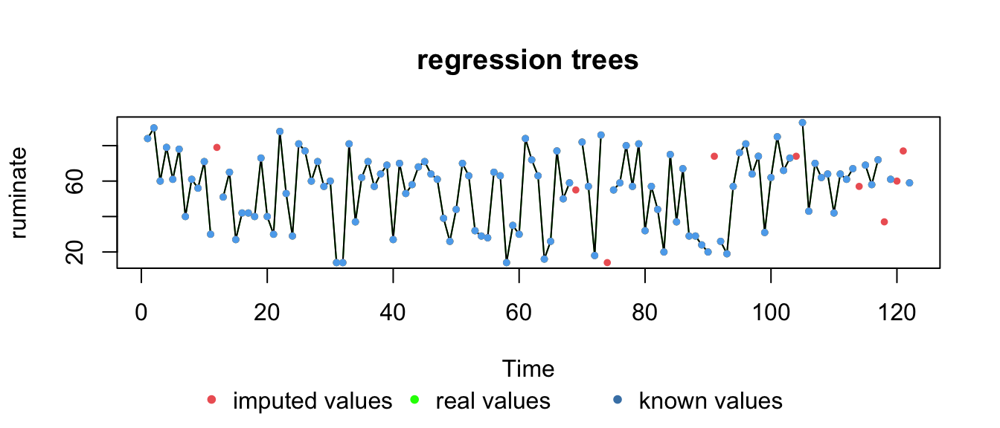
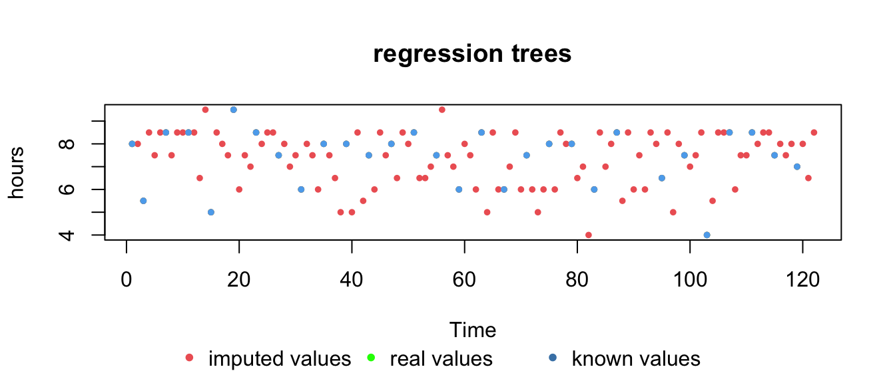
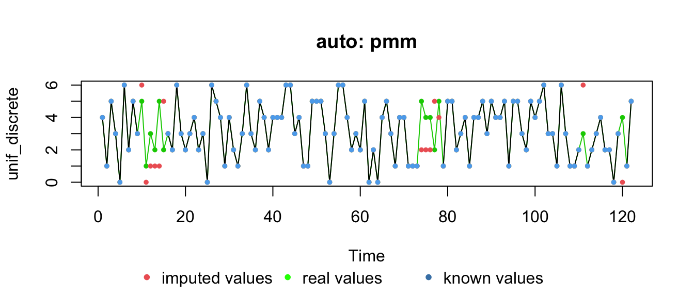
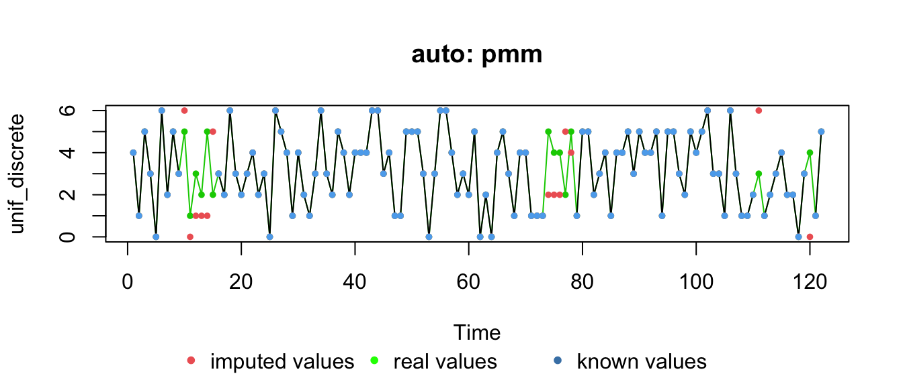
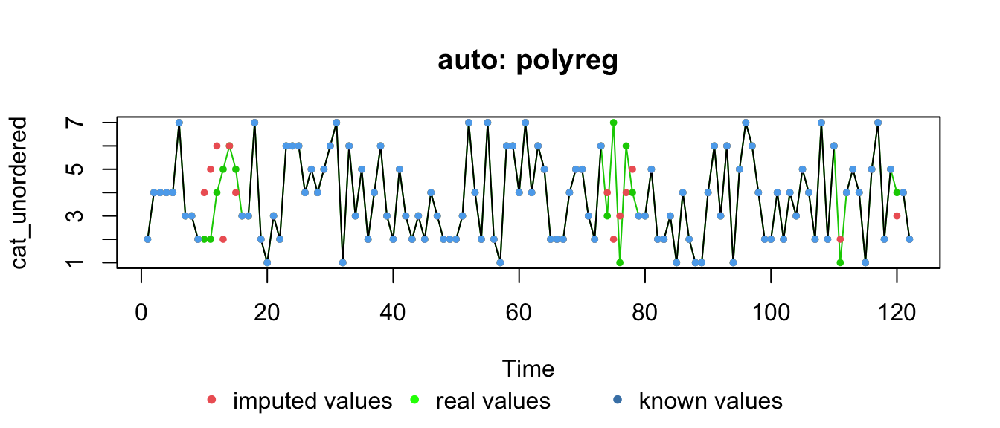

Dealing with missing values in time series
Fred Hasselman
2019-06-13
Source:vignettes/imputemissingsata.Rmd
imputemissingsata.Rmd“Much ado about nothing”
https://cran.r-project.org/web/views/MissingData.html
https://addi.ehu.es/bitstream/handle/10810/19052/TFM-MALUnaiGarciarena.pdf?sequence=1&isAllowed=y https://gking.harvard.edu/amelia
https://cran.r-project.org/web/packages/HotDeckImputation/HotDeckImputation.pdf
Data
# # Load data from OSF https://osf.io/tcnpd/
# require(osfr)
# manyAnalystsESM <- rio::import(osfr::osf_download(osfr::osf_retrieve_file("tcnpd") , overwrite = TRUE)$local_path)
# Or use the internal data
data(manyAnalystsESM)
# We want to use these variables
# Note: the infix function '%ci%' is from package 'invctr'
vars <- c("angry"%ci%manyAnalystsESM,"ruminate"%ci%manyAnalystsESM,"hours"%ci%manyAnalystsESM)
df_vars <- manyAnalystsESM[,vars]
# Create different variable types, we can use these to check imputation "accuracy"
set.seed(54321)
df_vars$zscore <- zscore <- rnorm(NROW(df_vars))
df_vars$zscore[is.na(df_vars$angry)] <- NA
df_vars$unif_discrete <- unif_discrete <- round(runif(NROW(df_vars),min = 0,max = 6))
df_vars$unif_discrete[c(10:15,74:78,111,120)] <- NA
df_vars$cat_unordered <- cat_unordered <- factor(round(runif(NROW(df_vars),min = 1,max = 7)))
df_vars$cat_unordered[c(10:15,74:78,111,120)] <- NA
df_vars$cat_ordered <- cat_ordered <- ordered(round(runif(NROW(df_vars),min = 1,max = 20)))
df_vars$cat_ordered[is.na(df_vars$angry)] <- NAFunction statsNA() can produce some hellful stats on NAs
> [1] "Length of time series:"
> [1] 122
> [1] "-------------------------"
> [1] "Number of Missing Values:"
> [1] 9
> [1] "-------------------------"
> [1] "Percentage of Missing Values:"
> [1] "7.38%"
> [1] "-------------------------"
> [1] "Stats for Bins"
> [1] " Bin 1 (31 values from 1 to 31) : 1 NAs (3.23%)"
> [1] " Bin 2 (31 values from 32 to 62) : 0 NAs (0%)"
> [1] " Bin 3 (31 values from 63 to 93) : 3 NAs (9.68%)"
> [1] " Bin 4 (29 values from 94 to 122) : 5 NAs (17.2%)"
> [1] "-------------------------"
> [1] "Longest NA gap (series of consecutive NAs)"
> [1] "2 in a row"
> [1] "-------------------------"
> [1] "Most frequent gap size (series of consecutive NA series)"
> [1] "1 NA in a row (occuring 7 times)"
> [1] "-------------------------"
> [1] "Gap size accounting for most NAs"
> [1] "1 NA in a row (occuring 7 times, making up for overall 7 NAs)"
> [1] "-------------------------"
> [1] "Overview NA series"
> [1] " 1 NA in a row: 7 times"
> [1] " 2 NA in a row: 1 times"> [1] "Length of time series:"
> [1] 122
> [1] "-------------------------"
> [1] "Number of Missing Values:"
> [1] 13
> [1] "-------------------------"
> [1] "Percentage of Missing Values:"
> [1] "10.7%"
> [1] "-------------------------"
> [1] "Stats for Bins"
> [1] " Bin 1 (31 values from 1 to 31) : 6 NAs (19.4%)"
> [1] " Bin 2 (31 values from 32 to 62) : 0 NAs (0%)"
> [1] " Bin 3 (31 values from 63 to 93) : 5 NAs (16.1%)"
> [1] " Bin 4 (29 values from 94 to 122) : 2 NAs (6.9%)"
> [1] "-------------------------"
> [1] "Longest NA gap (series of consecutive NAs)"
> [1] "6 in a row"
> [1] "-------------------------"
> [1] "Most frequent gap size (series of consecutive NA series)"
> [1] "1 NA in a row (occuring 2 times)"
> [1] "-------------------------"
> [1] "Gap size accounting for most NAs"
> [1] "6 NA in a row (occuring 1 times, making up for overall 6 NAs)"
> [1] "-------------------------"
> [1] "Overview NA series"
> [1] " 1 NA in a row: 2 times"
> [1] " 5 NA in a row: 1 times"
> [1] " 6 NA in a row: 1 times"Multiple imputation: auto-select method
The function mice() will try to select a method based on variable type
Compare imputation methods
We can check “truth” values for the created valiables.
truth <- list(df_vars$angry, df_vars$ruminate, df_vars$hours, zscore, unif_discrete, cat_unordered, cat_ordered)
for(c in 1:NCOL(df_vars)){
print(colnames(df_vars)[c])
withNA <- as.numeric_discrete(df_vars[,c], keepNA = TRUE)
Truth <- as.numeric_discrete(truth[[c]], keepNA = TRUE)
plotNA.imputations(x.withNA = withNA,
x.withImputations = as.numeric_discrete(out.cart[,c]),
x.withTruth =Truth,
main="regression trees",
ylab = colnames(df_vars)[c])
plotNA.imputations(x.withNA = withNA,
x.withImputations = as.numeric_discrete(out.auto[,c]),
x.withTruth = Truth,
main = paste("auto:",imp.mice$method)[c],
ylab = colnames(df_vars)[c])
plotNA.imputations(x.withNA = withNA,
x.withImputations = out.kalman[,c],
x.withTruth = Truth,
main = "kalman filter",
ylab = colnames(df_vars)[c])
}> [1] "angry"

> [1] "ruminate"
> [1] "hours"
> [1] "zscore"> [1] "unif_discrete" 

> [1] "cat_unordered"
> [1] "cat_ordered"